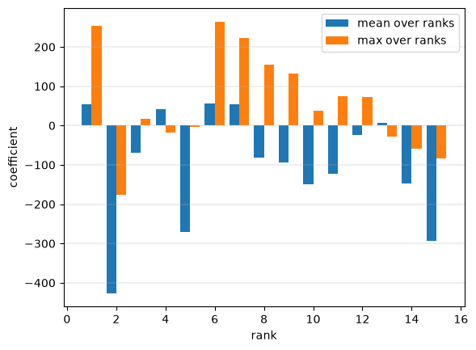
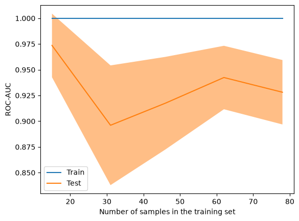
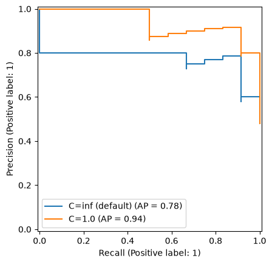

Train a detector on answers you have already judged#
You start with the whole training set already in hand: answers the model under test generated, and a verdict on each. This notebook turns that pair into a fitted detector.
A detector is trained for one model — it scores how uncertain that model was while it
generated — so the responses must come from the model you want to detect hallucinations
in, carrying their top_logprobs. The wider context is in the guide’s Training a
detector.
It walks that training set through the package end to end: reading the two batch files, running the three pipeline steps by hand, fitting, cross-validating, and saving the result.
The sample files are synthetic: real questions, with the responses and their log-probabilities generated rather than sampled from a model.
The inputs#
RESPONSES holds what the model under test generated, one OpenAI Batch line per request,
each carrying top_logprobs per token — that distribution is the only thing the detector
reads. JUDGMENTS holds a verdict on each of those responses, keyed by the same
custom_id, from an LLM judge, a human pass, or matching against a gold answer.
read_batch reads the lines, read_judgment reads the verdict inside one. A failed
request carries no completion and failure says why: two of the hundred lines are timeouts,
leaving 98 responses. read_judgment returns True when the judge said the response was
correct, the opposite of the class the detector predicts, so the label is its
negation.
from pathlib import Path
from artefactual.preprocessing import index_by_custom_id, read_batch, read_judgment, read_message
# Responses generated by the model this detector is being built for, one OpenAI Batch line
# each, carrying `top_logprobs` per token. This is the file to swap for your own run.
RESPONSES = Path("responses_sample.jsonl")
# A verdict on each of those responses, keyed by the same `custom_id`.
JUDGMENTS = Path("judgments_sample.jsonl")
K = 15 # ranks per token; a detector is loaded at the k it was fit at
SEED = 42
# `read_batch` validates each line into `BatchRequestOutput` and refuses a repeated
# `custom_id`, which would otherwise pair a response with another question's verdict.
lines = read_batch(RESPONSES)
for row in lines:
if row.failure:
print(f"dropped {row.custom_id}: {row.failure}")
generated = index_by_custom_id(lines)
# `read_judgment` returns True when the judge said the response was CORRECT, the opposite
# of the class the detector predicts.
labelled = [
(generated[row.custom_id], int(not verdict))
for row in read_batch(JUDGMENTS)
if row.custom_id in generated and (verdict := read_judgment(row.completion)) is not None
]
responses = [row for row, _ in labelled]
labels = [label for _, label in labelled]
print(f"{len(generated)} responses, {len(labelled)} judged, {sum(labels)} hallucinations")
dropped q-017: error {'message': 'simulated upstream timeout'}
dropped q-062: error {'message': 'simulated upstream timeout'}
98 responses, 98 judged, 47 hallucinations
The three steps#
A detector is a scikit-learn Pipeline, and running its steps separately shows what each
one contributes.
LogProbParser turns the batch lines into (responses, tokens, ranks) — it opens the Batch
envelope itself, so the lines go in as they were read. The array is NaN-padded, because
responses differ in length: here the longest is 4 tokens, and every token carries all 15
ranks.
entropy_contributions converts each log-probability to s_kj = -p·ln(p), same shape, one
contribution per rank. EntropyTransformer then reduces the rank axis: the wepr reduction
keeps a mean and a max per rank, so k=15 becomes 30 features per response, one
coefficient each for the classifier to weight.
from artefactual.preprocessing.parser import LogProbParser
from artefactual.scoring import WEPR, BaseDetector, EntropyTransformer
logprobs = LogProbParser(k=K).transform(responses) # (responses, tokens, ranks), NaN-padded
s_kj = EntropyTransformer.entropy_contributions(logprobs) # -p*ln(p) per rank, peaking at p=1/e
features = EntropyTransformer(reduction="wepr").transform(logprobs)
logprobs.shape, s_kj.shape, features.shape
((98, 4, 15), (98, 4, 15), (98, 30))
Fit#
WEPR() returns the pipeline unfitted, so fit takes the batch lines directly and
there is no feature extraction to write. The split is stratified and happens first, so what
is reported describes responses the detector never saw.
ROC-AUC scores the ranking: whether hallucinations sort above grounded answers. The
classification report scores the decisions at a 0.5 cut, where recall on the
hallucination row is the fraction caught and precision is how many of the flags were
right. Only the AUC carries over to a different threshold.
import numpy as np
from sklearn.metrics import classification_report, roc_auc_score
from sklearn.model_selection import train_test_split
try:
from myst_nb import glue
except ImportError:
# Only the documentation build has MyST-NB, and only it renders what `glue` records.
# Running this notebook anywhere else -- Colab, a clone, the test suite -- must not
# need a Sphinx extension installed, so the calls below become no-ops.
def glue(*_args, **_kwargs):
return None
y = np.array(labels)
x_train, x_test, y_train, y_test = train_test_split(responses, y, test_size=0.25, stratify=y, random_state=SEED)
detector = WEPR(k=K).fit(x_train, y_train)
scores = detector.predict_proba(x_test)[:, 1]
# Glued, so the paragraph below quotes this run rather than a number typed once and left to
# drift. An `.md` carries no outputs, so a stale figure in the prose has nothing to contradict it.
glue("auc", roc_auc_score(y_test, scores), display=False)
glue("held_out", len(y_test), display=False)
print(f"fitted on {len(y_train)}, holding out {len(y_test)}")
print(f"ROC-AUC: {roc_auc_score(y_test, scores):.2f}\n")
print(classification_report(y_test, scores >= 0.5, target_names=["grounded", "hallucination"], zero_division=0))
fitted on 73, holding out 25
ROC-AUC: 0.84
precision recall f1-score support
grounded 0.91 0.77 0.83 13
hallucination 0.79 0.92 0.85 12
accuracy 0.84 25
macro avg 0.85 0.84 0.84 25
weighted avg 0.85 0.84 0.84 25
On the 25 held-out responses this fit reaches a ROC-AUC of 0.84. The sample is synthetic and small, so read it as the shape of the workflow rather than as a result.
What the fit weighs#
A fitted Pipeline slices. detector[:-1] is the parser and the transformer without the
classifier, so it produces exactly the features the three steps above built by hand.
detector[-1] is the classifier, and its 30 coefficients are 2k: a weight per rank for
the mean of the entropy contributions, and a weight per rank for the max. Plotted against
the rank, they say which part of the distribution this detector reads — weight lands across
the whole axis rather than on rank 1. The magnitudes are large because the default
classifier is unregularised; Choosing the final estimator is about that.
import matplotlib.pyplot as plt
# The by-hand steps and the pipeline are the same computation, not a resemblance.
assert np.allclose(detector[:-1].transform(responses), features, equal_nan=True)
mean_weights, max_weights = detector[-1].coef_[0].reshape(2, K)
ranks = np.arange(1, K + 1)
axes = plt.subplot()
axes.bar(ranks - 0.2, mean_weights, width=0.4, label="mean over ranks")
axes.bar(ranks + 0.2, max_weights, width=0.4, label="max over ranks")
axes.set(xlabel="rank", ylabel="coefficient")
axes.legend()
# Returns None, so the figure is the cell's only output -- an object repr above it is noise.
axes.grid(axis="y", linewidth=0.3)

It composes with scikit-learn#
Every sklearn.model_selection tool works on it.
Five folds over all 98 responses report a spread as well as a mean; the 25-answer holdout above lands below every one of the five.
LearningCurveDisplay answers the question that decides whether to label more: the
5-fold AUC at 20, 40, 60, 80 and 98 responses. A curve still climbing at the right edge
says more labels are worth buying; one that has flattened says the next hundred buy nothing.
Every step’s parameters are searchable, parser__k included. The classifier is refitted at
each width, so the comparison is legitimate — and the score climbing with k says the
signal here lives in the deeper ranks, not just the top one.
from sklearn.model_selection import GridSearchCV, StratifiedKFold, cross_val_score
folds = StratifiedKFold(5, shuffle=True, random_state=SEED)
auc = cross_val_score(WEPR(k=K), responses, y, cv=folds, scoring="roc_auc")
print(f"5-fold ROC-AUC: {auc.mean():.2f} +/- {auc.std():.2f} {np.round(auc, 2)}")
search = GridSearchCV(WEPR(), {"parser__k": [5, 10, 15]}, cv=folds, scoring="roc_auc")
search.fit(responses, y)
for k, mean in zip(search.cv_results_["param_parser__k"], search.cv_results_["mean_test_score"], strict=True):
print(f" k={k:>2}: {mean:.2f}")
5-fold ROC-AUC: 0.93 +/- 0.03 [0.96 0.91 0.96 0.92 0.88]
k= 5: 0.82
k=10: 0.85
k=15: 0.93
from sklearn.model_selection import LearningCurveDisplay
learning_curve = LearningCurveDisplay.from_estimator(
WEPR(k=K),
responses,
y,
cv=folds,
scoring="roc_auc",
train_sizes=np.linspace(0.2, 1.0, 5),
score_name="ROC-AUC",
std_display_style="fill_between",
)

Choosing the final estimator#
estimator= takes any scikit-learn estimator. The default is the unregularised logistic
regression the shipped detectors were fitted with, and on data this separable it saturates: almost every score
lands on 0 or 1, which leaves a precision-recall curve with almost no points on it and no
threshold to choose between.
Regularising is one keyword, and it spreads the scores back out — same features, same split,
a curve you can actually pick an operating point from. PrecisionRecallDisplay draws both on
one axes, where the saturation is the shape of the curve rather than a count of thresholds.
Then pick the threshold with TunedThresholdClassifierCV rather than by reading a number
off the curve: it cross-validates the cut on the training set alone, so the operating point
is not chosen on the rows it is then reported against. It wraps the detector, so
predict uses the tuned cut while predict_proba still returns the detector’s own scores.
The threshold is a number, not part of the .skops weights — it travels with the detector,
not inside it.
from sklearn.linear_model import LogisticRegression
from sklearn.metrics import PrecisionRecallDisplay, precision_recall_curve
curves = None
for label, estimator in (("C=inf (default)", None), ("C=1.0", LogisticRegression(C=1.0, max_iter=1000))):
fitted = WEPR(k=K, estimator=estimator).fit(x_train, y_train)
probabilities = fitted.predict_proba(x_test)[:, 1]
decided = np.mean((probabilities < 0.01) | (probabilities > 0.99))
thresholds = precision_recall_curve(y_test, probabilities)[2]
print(
f"{label:>15}: AUC {roc_auc_score(y_test, probabilities):.2f}, "
f"{decided:.0%} of scores at the rails, {len(thresholds)} distinct thresholds"
)
# The first call makes the axes, the second draws onto it: `curves.ax_` is how a
# Display hands its axes to the next one, with no figure to manage by hand.
curves = PrecisionRecallDisplay.from_predictions(
y_test, probabilities, name=label, ax=None if curves is None else curves.ax_
)
C=inf (default): AUC 0.84, 96% of scores at the rails, 16 distinct thresholds
C=1.0: AUC 0.95, 0% of scores at the rails, 25 distinct thresholds

from sklearn.model_selection import TunedThresholdClassifierCV
# Tuned on the training rows only, by cross-validation, and reported on the held-out ones.
tuned = TunedThresholdClassifierCV(
WEPR(k=K, estimator=LogisticRegression(C=1.0, max_iter=1000)),
scoring="f1",
cv=folds,
).fit(x_train, y_train)
print(f"threshold {tuned.best_threshold_:.2f} rather than 0.5, {tuned.best_score_:.2f} F1 in cross-validation")
print(classification_report(y_test, tuned.predict(x_test), target_names=["grounded", "hallucination"], zero_division=0))
threshold 0.47 rather than 0.5, 0.91 F1 in cross-validation
precision recall f1-score support
grounded 1.00 0.77 0.87 13
hallucination 0.80 1.00 0.89 12
accuracy 0.88 25
macro avg 0.90 0.88 0.88 25
weighted avg 0.90 0.88 0.88 25
Per-token scores#
predict_token_proba scores every token position instead of pooling the response into one
number, which locates where a response drifts. Padded positions stay NaN rather than being
scored as real tokens.
These sample responses are one or two tokens long, so there is little to see.
per_token = detector.predict_token_proba(x_test[:3]) # (responses, tokens, 1)
for row, scores_per_token in zip(x_test[:3], per_token, strict=True):
tokens = [t["token"] for t in row.completion["choices"][0]["logprobs"]["content"]]
scored = " ".join(f"{token.strip()}={score:.2f}" for token, (score,) in zip(tokens, scores_per_token, strict=False))
print(f"P={detector.predict_proba(row)[0, 1]:.2f} {scored}")
P=1.00 Saturn=1.00
P=1.00 Colombia=1.00
P=1.00 David=1.00 Ricardo=1.00
Save it, and load it back#
.skops rather than a pickle. from_pretrained takes a .skops file, a directory holding
model.skops, or a Hugging Face repository id — the shipped detectors are loaded that
way, and yours is too once you push its model.skops to a repository of your own.
k is part of the weights, not a runtime option: the coefficients were fitted at one rank
count and mean nothing at another, so loading at a different k raises rather than
mis-shaping the score.
The rows scored below are held-out ones.
path = detector.save_estimator("wepr-trained.skops")
reloaded = WEPR.from_pretrained(path, k=K)
print(f"{path}, reloaded at k={K}")
# Held-out answers: the rows the fit never saw.
for row, label in list(zip(x_test, y_test, strict=True))[:5]:
said = (read_message(row.completion) or "").strip()
print(f"[{'hallucination' if label else 'grounded '}] P={reloaded.predict_proba(row)[0, 1]:.3f} {said[:40]!r}")
# The rank count is part of the weights, so a mismatch is refused rather than mis-shaped.
try:
WEPR.from_pretrained(path, k=K - 1)
except ValueError as error:
print(f"\nfrom_pretrained(path, 'wepr', k={K - 1}) -> ValueError: {error}")
wepr-trained.skops, reloaded at k=15
[hallucination] P=1.000 'Saturn'
[hallucination] P=1.000 'Colombia'
[hallucination] P=1.000 'David Ricardo'
[grounded ] P=1.000 'Ottawa'
[grounded ] P=0.000 'Beethoven'
from_pretrained(path, 'wepr', k=14) -> ValueError: The WEPR detector at 'wepr-trained.skops' takes 30 feature(s), but k=14 needs 28. Its coefficients are fixed at the rank count they were trained at; pass k=15, or use a detector trained at k=14.
Where to go next#
epris the same call with one word changed: it pools every rank into a single feature instead of2k, which is the one to reach for when there is too little labelled data to fitwepr’s coefficients.EntropyTransformer(reduction=...)also takes a callable(s_kj, axis) -> features, so the two named reductions are not the only ones.scripts/train_detector.pyreads these same two files and reports bootstrap confidence intervals around the AUC, which a holdout this size needs.predict_probaandpredict_token_probaare the whole scoring surface; a fitted detector is an ordinary estimator from here on.